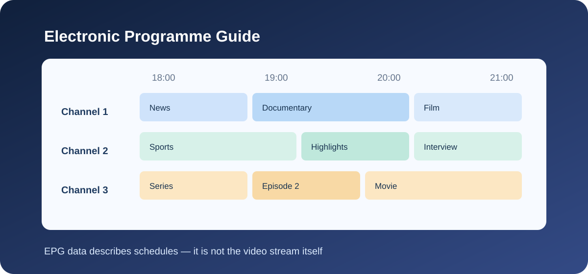

IPTV EPG Explained: What an Electronic Programme Guide Does
Independent educational guide · UK audience
EPG stands for Electronic Programme Guide. In an IPTV app, an EPG is the schedule view that can show programme titles, descriptions, channels and start or end times. It is guide data, not the video stream itself.

What information can an EPG contain?
- Channel names and identifiers.
- Programme titles and descriptions.
- Scheduled start and end times.
- Categories, episode details or artwork when supplied by the data source and supported by the app.
How EPG data is used
A compatible player matches programme schedule data to channel entries using identifiers or other mapping rules. The provider, data source and app must use compatible formats and channel identifiers for the guide to display correctly. The exact process varies by service and player.
Common EPG problems
Guide is empty
Check whether the service supplies EPG data, whether the app supports its format and whether the guide has been refreshed.
Wrong channel listings
Channel identifiers may not match between the playlist and schedule data. Check the app's mapping options and ask the provider for its official configuration instructions.
Programme times are incorrect
Check the device time, time zone and any time-offset settings in the app. Data sources may also publish schedules in different time zones.
Old programme information
Refresh the guide if the app provides that option, check the update interval and contact the data provider if current schedule information is still missing.
To see an example of provider-published service information, visit the Kemo TV website. This is a promotional link only and does not verify that the provider supplies EPG data, supports a particular player or has rights to distribute any content.
EPG versus playlist data
A playlist commonly identifies channels or stream locations, while EPG data describes programme schedules. The two may be linked by channel identifiers, but one does not guarantee the other is present or correct.
For another example of provider-published information, review the Kemo TV website. This promotional link does not verify EPG availability, player compatibility or content rights.
Frequently asked questions
Does an EPG provide live TV?
No. It displays schedule information. Playback depends on a separate authorised service, compatible app and available stream.
Why are some channels missing from the guide?
The schedule source may not include them, identifiers may not match, or the app may not support the supplied data.
Does an EPG prove a channel is licensed?
No. Programme listings are metadata and do not establish content distribution rights.
Explore more: IPTV Guide UK · UK IPTV guide · Device guide · App guide